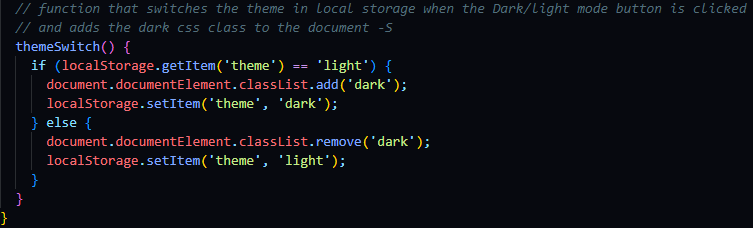

UI/UX/frontend-kehittäjän rooli
Käyttämäni teknologiat
- Angular
- Sovelluksen ohjelmistokehys
-
Aiempaa kokemusta parilta kurssilta tehtävien ja demojen muodossa
- Ohjelmointikielinä tutut HTML, CSS ja TypeScript
- Tailwind CSS
- Angular Material
- UI komponenttikirjasto
- Yhdessä Tailwindin kanssa uusia tuttavuuksia
- Figma ja Canva
- UI/UX suunnittelun ja muun graafisen tuotannon työkaluja
Tuotannon alku

-
Keskityin suunnittelemaan sovelluksen rungon ja päätoiminnallisuudet,
että sitä voitaisiin testata ennen tuotannon alkua käyttäjillä.
-
Ulkoasuun ei vielä keskitytty niin tarkasti, sillä sen toteutuksesta
oli vielä paljon ideoita ilmassa.
-
Tässä vaiheessa opettelin kuitenkin käyttämään Figman pluginia
nimeltään TeleportHQ.
-
TeleportHQ pystyi viemään Figmasta kokonaisia layoutteja, jotka se
käänti suoraan HTML ja CSS kielille tarpeen mukaan.
-
Layoutteihin pystyi lisäämään elementtejä vielä TeleportHQ:ssa.
-
Mahdollisuus kääntää suoraan valmiita komponentteja Angularille.
-
Käännetty koodi oli kuitenkin hyvin raskasta ja "turhaa" koodia
olisi tullut paljon verrattuna itse koodattuun.
-
Lisäksi myöhemmin päädyttiin käyttämään CSS frameworkiä ja UI
kirjastoa joten tarvetta tälle ominaisuudelle ei enää ollut.
Tuotanto
-
Ensimmäisen sprintin tavoite oli saada frontend siihen kuntoon, että
komponentit päätoiminnallisuuksille löytyy (ks. Figma kuva).
-
Tässä vaiheessa sovellus oli kirjoitettu puhtaasti pelkää HTML ja CSS
käyttäen.
-
Myös TeleportHQ:ta oli testattu ensimmäiseen versioon sen verran, että
Figman mukaiset napit oli tuotettu sitä käyttäen.
-
Suunniteltujen toiminnallisuuksien valossa totesimme kuitenkin UI
tiimin kesken että jollekkin CSS kirjastolle olisi käyttöä.
Tailwind CSS

- CSS Frameworkiksi valikoitui Tailwind useastakin syystä:
-
Ei aiempaa kokemusta, haluttiin oppia ja käyttää muutakin kuin
Bootstrap.
- Hyvä kehittäjän ja yhteisön tuki.
-
Tailwind tarjosi hyvä tasapainon valmiiden luokkien ja omien luokkien
välillä:
-
Elementit kuten buttonit ja inputit pystyi tyylittelemään vapaasti
globaaliin styles-tiedostoon, josta niitä oli helppo käyttää
inline-koodina kaikissa komponenteissa.
-
Komponenttien rakenteeseen ja responsiivisuuteen liittyvät luokat
sai suoraan Tailwindin omista luokista.
-
Ei pakottanut käyttämään mitään tiettyjä värejä tai fontteja, vaan
ne sai kustomoitua vapaasti.
-
Myöhemmin hyödylliseksi osoittautui myös Tailwindillä onnistuva
darktheme:

Angular Material
-
Angular Material UI kirjasto tarjosi elementtejä joiden käyttäminen
säästi aikaa ja koodia.
-
Vaati importoinnin app moduuleihin, haluttuun komponenttiin ja
elementin käytön HTML:ssä.
-
Dialogia varten täytyi vaan luoda oma komponentti sen sisällölle, ja
sen jälkeen kutsua sitä haluamastaan komponentista.
Angularin omat materiaalit
-
Aiemmin mainittujen lisäksi Angularin tarjoamista materiaaleista
käyttöä oli:
- Animaatioille
- NgIf conditional rendering
-
NgIf käytin komponenteissa, joissa lisäsisällöllä ei haluttu viedä
tilaa, mutta käyttäjä saisi ne auki kilkkaamalla.
-
Yksinkertainen funktio joka muutti boolean arvoa kun elementtiä tai
buttonia klikattiin käyttöliittymässä, joka taas renderoi sisällön
arvon mukaan.
-
Angularin animaatiot olivat uusi tuttavuus ja niiden käyttö oli
helppoa vaikka logiikka näyttikin aluksi vaikealta.
-
Yksinkertaisuudessaan on triggeri, joka aktivoituessaan hoitaa
animaation.
-
Triggerin aktivoi isOpen määritelmän vaihtuminen, jota taas vaihtaa
onClick tapahtuma nimeltään toggle.
Sovelluksen ulkoasun kehittymisestä
-
Ensimmäiseen Project checkup:iin asteli huomiota ja keskustelua
herättävä Votea.
-
Syy oli selkeä: tiimissä tapahtuneiden poissaolojen takia backend ja
frontend olivat 2v1 asetelmassa.
-
Backend oli päässyt vauhtiin, ja vauhtia piti pitää myös frontin
puolella, joten ulkoasun sijaan työtunnit käytin siihen, että
komponentit ja niiden toiminnallisuudet saatiin siihen kuntoon että
niihin pystyisi saumatta yhdistämään backendin.
-
TCHOPS:ssa mainitsemani tavoitteet kehittyä sisällöntuotossa ja
visuaalisessa suunnittelussa olivat viimeisen parin kuukauden aikana
nähneet aika rajusti kirvestä.

-
Viimeiseen Project checkup:iin mennessä savu oli laskenut ja Votea
alkoi näyttää mobiilisovellukselta.
-
Otin aiempien checkuppien palautteen talteen ja sovellus oli siinä
tilanteessa että kerkesin käyttää aikaa esimerkiksi:
- Buttonien, checkboxien, inputien ja fonttien kokoon.
- Värimaailmaan ja niiden kontrasteihin.
- Elementtien asetteluun tila ja käytettävyys huomioiden.
- Responsiivisuus.
-
Käytettävyyden ja värien osalta tutustuin tarkemmin Web Content
Accessabilty Guidelineseihin (WCAG).
-
Lopulta sovellus oli fonttien, värien, ja elementtien osalta
saavutettavuusluokitukseltaan vähintään AA.
Reflektio-osuus
-
Oli onni onnettomuudessa että TCHOPS:in tavoite kehittyä visuaalisessa
suunnittelussa ja sisällöntuotossa ei ihan toteutunutkaan.
-
Koen, että HTML:n ja CSS:n koodauksen lisäksi opin ja sain paljon
enemmän irti siitä, että pääsin koodaamaan myös toiminnallisuutta ja
logiikkaa frontendissä.
-
Vaikka koodi ei itsessään ole vielä mitään perustasoa
kummallisempaa, niin mielenkiinto oppia ja kehittyä siinä paremmaksi
heräsi.
-
Hyvää oli myös huomata, että oma preferenssi olisi työskennellä
asiatyylisiä sovelluksia/nettisivuja tehdessä ja jättää tällaiset
värikkäät ja visuaalisesti näyttävät sovellukset jollekkin minua
luovemmalle.
-
Frontendin parissa näen itseni joka tapauksessa joskus työskentelevän.
Siihen vaaditaan vielä töitä ja harjoittelua ihan peruskoodauksenki
parissa. Sen takia olisi mielenkiintoista opetella joitain muitakin
frameworkejä, kuten vaikka React tai Vue.
Sovelluksen logo/ikoni
-
Graafisen suunnittelun ja sisällöntuoton hommia pääsin tekemään sen
verran että tein sovellukselle logon.
-
Tähän käytin Canvaa, joka ilmaiseksi sovellukseksi osoittauti
yllättävän käteväksi, jos tarvitsee suunnitella yksinkertaista
sisältöä.
-
Vaihtoehtoja syntyi useampi joista viimeinen valittiin tiimin kanssa
käyttöön sovelluksessa, PWA-ikonina ja markkinoinnin puolella.
Alkuun ↑